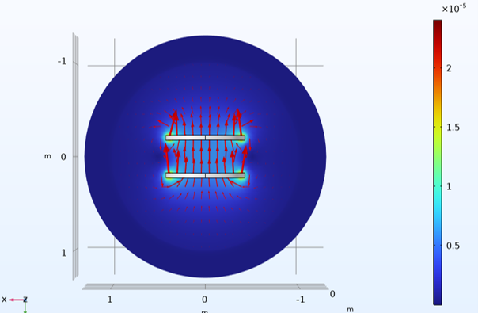

TIPE (supervised research project): two-dimensional position control using the Hall effect
Python modelling and prototyping (Arduino). 15% gain in the efficiency of an induction charger for parking spaces. Measurements were made on a prototype displacement mechanism built with phone-charger coils.